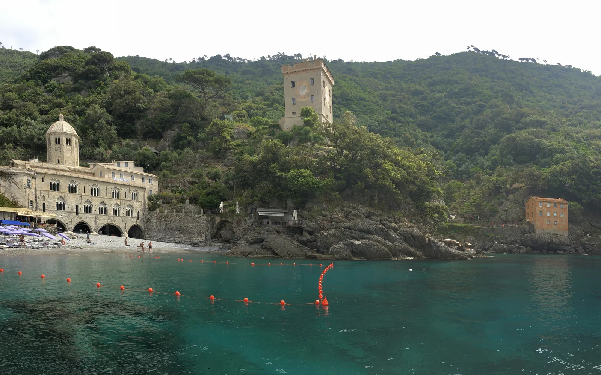

San Fruttuoso — Christ des Abysses
Portofino, Ligurie, Italie · plongée, snorkeling

Baie de San Fruttuoso, sur le promontoire de Portofino, accessible seulement par la mer ou à pied. Au large de la plage, une statue du Christ en bronze repose par environ 17 m de fond dans l’aire marine protégée.
- Lieu
- Portofino, Ligurie, Italie
- Niveau
- Intermédiaire
- Activités
- plongée, snorkeling
- Type d'eau
- Mer / océan
- Coordonnées
- 44.31, 9.18 (position approximative du secteur)
Dangers à connaître
- Bateaux-navettes et plaisance nombreux dans la baie : plonge avec une bouée de signalisation.
- Aire marine protégée : plongée encadrée et mouillage réglementé.
Le conseil d'Ocean Buddy
La plongée dans l’aire marine se fait avec un centre agréé ; par eau claire, la statue se devine depuis la surface.
Ouvrir dans Ocean Buddy Télécharger sur l'App Store
Source : Fiche Ocean Buddy · septembre 2026 · à vérifier localement.